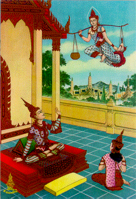

BuddhaSasana Home Page
This document is written in Vietnamese, with
Unicode Times font
Perfection of Equanimity - Upekkha Parami
Xả Tâm Balamật
When the Buddha was born as Brahma Narada, he had fulfilled his Supreme Perfection of Equanimity. He convinced King Angati of truth. Trong một tiền kiếp khi Ðức Phật là Ngài Phạm-thiên Narada, Ngài thực hành hạnh Xả Tâm Balamật. Ngài thuyết phục được vua Angati về Chân Lý.
Kệ ngôn: An nhiên hành xả giữa đời
Khen chê đặng thất khổ vui thường tình
Ðiều tâm giữ ý quân bình
Trong cơn bão loạn biết gìn chánh tri
Hy sinh ngoại vật tứ chi
Hoặc luôn mạng sống sá gì huyển thân
Phật xưa pháp độ vẹn toàn
Chúng con nguyện bước theo chân Ðại Từ( www.phapluan.com )
[Xuất Gia][Tinh Tấn][Từ Tâm][Chí Nguyện][Trí Tuệ]
[Trì Giới][Kiên Nhẫn][Xả Tâm][Chân Thật][Bố Thí]
Source: Post Card by S. Dhumphakdi & Sons Publisher, Bangkok, Thailand
last revised: 02-Sept-2004